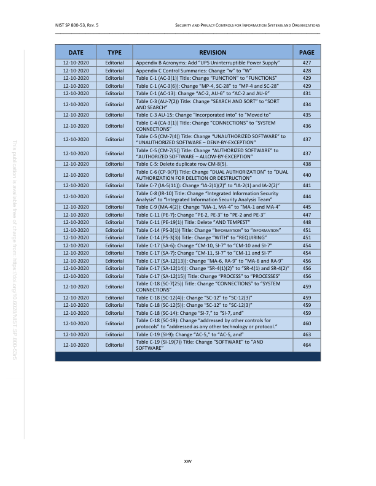
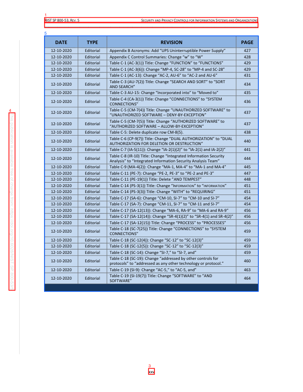

PDF Lab Second-Pass Page Review
Before Evidence


Selected Candidates
cand:p0027:0000:side_chromeside_chrome
{
"bbox": [
0.14705882352941177,
0.04473802296802251,
0.8507378272760927,
0.05821938948197798
],
"block_id": "actual:p27:block:0",
"block_index": 0,
"candidate_id": "cand:p0027:0000:side_chrome",
"confidence": 0.8,
"detection_reason": [
"block_type:header_footer_noise",
"preset_type:side_chrome",
"hardening_interest",
"boundary_geometry"
],
"features": {
"bbox_area": 0.009487,
"block_type": "header_footer_noise",
"has_toc_entries": false,
"semantic_role": "page_chrome",
"source_type": "Header",
"text_length": 94
},
"json_pointer": "/pages/26/blocks/0",
"page_index": 26,
"page_number": 27,
"pdf_id": "NIST_SP_800-53r5:fc63bcd61715d018",
"preset_type": "side_chrome",
"text_excerpt": "NIST SP 800-53, REV. 5 SECURITY AND PRIVACY CONTROLS FOR INFORMATION SYSTEMS AND ORGANIZATIONS"
}cand:p0027:0001:side_chromeside_chrome
{
"bbox": [
0.14705882352941177,
0.05679397390346334,
0.8517353332120609,
0.07054738324097913
],
"block_id": "actual:p27:block:1",
"block_index": 1,
"candidate_id": "cand:p0027:0001:side_chrome",
"confidence": 0.8,
"detection_reason": [
"block_type:header_footer_noise",
"preset_type:side_chrome",
"hardening_interest",
"boundary_geometry"
],
"features": {
"bbox_area": 0.009692,
"block_type": "header_footer_noise",
"has_toc_entries": false,
"semantic_role": "page_chrome",
"source_type": "Header",
"text_length": 97
},
"json_pointer": "/pages/26/blocks/1",
"page_index": 26,
"page_number": 27,
"pdf_id": "NIST_SP_800-53r5:fc63bcd61715d018",
"preset_type": "side_chrome",
"text_excerpt": "_________________________________________________________________________________________________"
}cand:p0027:0002:side_chromeside_chrome
{
"bbox": [
0.49029411365783293,
0.939856018682923,
0.5096764658011642,
0.9550605542732008
],
"block_id": "actual:p27:block:2",
"block_index": 2,
"candidate_id": "cand:p0027:0002:side_chrome",
"confidence": 0.8,
"detection_reason": [
"block_type:header_footer_noise",
"preset_type:side_chrome",
"hardening_interest",
"boundary_geometry"
],
"features": {
"bbox_area": 0.000295,
"block_type": "header_footer_noise",
"has_toc_entries": false,
"semantic_role": null,
"source_type": "PageNumber",
"text_length": 3
},
"json_pointer": "/pages/26/blocks/2",
"page_index": 26,
"page_number": 27,
"pdf_id": "NIST_SP_800-53r5:fc63bcd61715d018",
"preset_type": "side_chrome",
"text_excerpt": "xxv"
}cand:p0027:0003:side_chromeside_chrome
{
"bbox": [
0.0296323533151664,
0.28780303338561397,
0.049705879361021756,
0.7406287915778883
],
"block_id": "actual:p27:block:3",
"block_index": 3,
"candidate_id": "cand:p0027:0003:side_chrome",
"confidence": 0.8,
"detection_reason": [
"block_type:header_footer_noise",
"preset_type:side_chrome",
"hardening_interest",
"boundary_geometry"
],
"features": {
"bbox_area": 0.00909,
"block_type": "header_footer_noise",
"has_toc_entries": false,
"semantic_role": null,
"source_type": "Boilerplate",
"text_length": 92
},
"json_pointer": "/pages/26/blocks/3",
"page_index": 26,
"page_number": 27,
"pdf_id": "NIST_SP_800-53r5:fc63bcd61715d018",
"preset_type": "side_chrome",
"text_excerpt": "This publication is available free of charge from: https://doi.org/10.6028/NIST.SP.800 -53r5"
}cand:p0027:0004:tabletable
{
"bbox": [
0.14666667015723933,
0.09151512685448232,
0.8525490355647467,
0.743409089367799
],
"block_id": "actual:p27:table:0",
"block_index": 4,
"candidate_id": "cand:p0027:0004:table",
"confidence": 0.8,
"detection_reason": [
"block_type:table",
"preset_type:table",
"hardening_interest",
"long_text_region",
"large_region"
],
"features": {
"bbox_area": 0.46016,
"block_type": "table",
"has_toc_entries": false,
"semantic_role": null,
"source_type": "table",
"table_bbox_clipped_to_page": false,
"table_full_normalized_bbox": [
0.14666667015723933,
0.09151512685448232,
0.8525490355647467,
0.743409089367799
],
"table_off_page_extent": {
"bottom": 0.0,
"left": 0.0,
"right": 0.0,
"top": 0.0
},
"table_visible_bbox": [
0.14666667015723933,
0.09151512685448232,
0.8525490355647467,
0.743409089367799
],
"text_length": 3100
},
"json_pointer": "/pages/26/blocks/4",
"page_index": 26,
"page_number": 27,
"pdf_id": "NIST_SP_800-53r5:fc63bcd61715d018",
"preset_type": "table",
"text_excerpt": "DATE | TYPE | REVISION | PAGE 12-10-2020 | Editorial | Appendix B Acronyms: Add \u201cUPS Uninterruptible Power Supply\u201d | 427 12-10-2020 | Editorial | Appendix C Control Summaries: Change \u201cw\u201d to \u201cW\u201d | 428 12-10-2020 | Editorial | Table C-1 (AC-3(1)) Title: Change \u201cFUNCTION\u201d to \u201cFUNCTIONS\u201d | 429 12-10-2020 | Editorial | Table C-1 (AC-3(6)): Change \u201cMP-4, SC-28\u201d to \u201cMP-4 and SC-28\u201d | 429 12-10-2020 | Editorial | Table C-1 (AC-13): Change \u201cAC-2, AU-6\u201d to \u201cAC-2 and AU-6\u201d | 431 12-10-2020 | Editorial | Ta"
}Review Validation
{
"candidate_count": 5,
"errors": [],
"expected_candidate_ids": [
"cand:p0027:0000:side_chrome",
"cand:p0027:0001:side_chrome",
"cand:p0027:0002:side_chrome",
"cand:p0027:0003:side_chrome",
"cand:p0027:0004:table"
],
"ok": true,
"page_case": {
"case_id": "page_case_0001_p0027",
"page_number": 27
},
"schema": "pdf_lab.second_pass.review_validation.v1",
"seen_candidate_ids": [
"cand:p0027:0000:side_chrome",
"cand:p0027:0001:side_chrome",
"cand:p0027:0002:side_chrome",
"cand:p0027:0003:side_chrome",
"cand:p0027:0004:table"
]
}
Page Case
{
"candidate_ids": [
"cand:p0027:0000:side_chrome",
"cand:p0027:0001:side_chrome",
"cand:p0027:0002:side_chrome",
"cand:p0027:0003:side_chrome",
"cand:p0027:0004:table"
],
"case_id": "page_case_0001_p0027",
"forced_by_human_annotation": true,
"page_index": 26,
"page_number": 27,
"preset_counts": {
"side_chrome": 4,
"table": 1
},
"selection_probability_basis": {
"candidate_count_on_page": 5,
"candidate_share_estimate": 1.0,
"forced_page": true,
"method": "forced_human_annotation",
"page_score": 25.25,
"total_candidate_count": 5,
"total_page_score": 25.25,
"weighted_page_score_inclusion_estimate": 1.0
},
"selection_probability_estimate": 1.0,
"selection_reason": [
"human_annotated_page",
"high_risk_preset",
"high_risk_candidate",
"boundary_geometry",
"high_candidate_score"
],
"selection_score": 25.25,
"strata": [
"geometry:boundary",
"preset:side_chrome",
"preset:table",
"risk:high"
]
}
Artifacts
- state.json
- sampled_candidate_manifest.json
- page_before.json
- page_before.png
- page_candidates.png
- selected_candidates.json
- candidate_presets.json
- review_request.json
- review_request_validation.json
- scillm_orchestrator_page_dag_spec.json
- scillm_orchestrator_page_dag_spec_validation.json
- scillm_orchestrator_page_submission.json
- scillm_orchestrator_page_submission_validation.json
- review_validation.json
- scillm_review_preflight.json
- scillm_review_receipt.json
- review_response.json
- scillm_page_orchestrator_run_request.json
- scillm_page_orchestrator_run_validation.json
- scillm_page_orchestrator_run_receipt.json
{kind=link}
{kind=link}